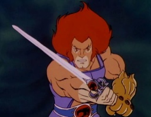

Lion-O with the Sword of Omens © 1985 Rankin/Bass / Telepictures, now Warner Bros. Used for classroom teaching.
This is the same picture as on the home page and the ThunderCats record. There, what mattered was Lion-O. Here, the page is about the sword, so the alt text describes the sword and the Eye of Thundera in its hilt instead.
When danger is near, Lion-O holds the sword to his face and calls for "sight beyond sight". The Eye shows him what is happening far away.